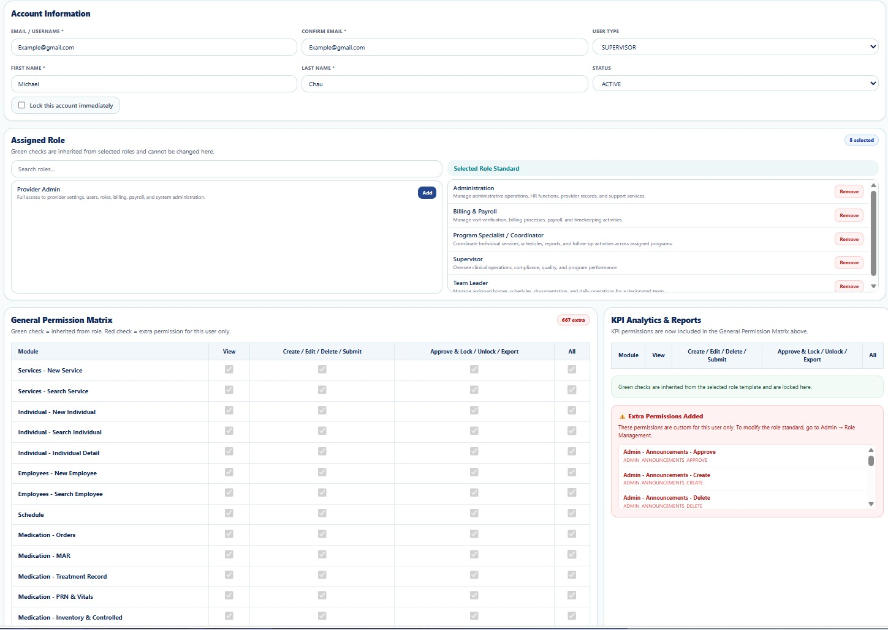

The User Profile page allows authorized administrators to manage user account information, assigned roles, permissions, account status, and security settings. User access throughout the system is determined by the roles and permissions configured on this page.
The User Profile page provides administrators with a centralized location to manage user accounts, role assignments, permission inheritance, and account security.

Figure 1. User Profile Management
| Section | Description |
|---|---|
| Account Information | Manage Email, Username, User Type, Status, First Name, Last Name, and account lock settings. |
| Assigned Role | Assign one or more role templates that automatically inherit standard permissions. |
| General Permission Matrix | Displays all permissions inherited from assigned roles. |
| Extra Permissions | Grant or revoke user-specific permissions without modifying the role template. |
| KPI Analytics & Reports | Displays KPI-related permissions included with assigned roles. |
A user may be assigned one or multiple role templates. Permissions from all assigned roles are inherited automatically.
Examples include:
The General Permission Matrix displays all inherited permissions. Additional permissions granted specifically to the user are displayed separately under Extra Permissions Added.
Can one user have multiple roles?
Yes. Users may inherit permissions from multiple assigned role templates.
Can I remove inherited permissions?
Inherited permissions are controlled by the assigned role template. User-specific permissions can be added separately.
When do permission changes take effect?
Changes are applied immediately after saving.